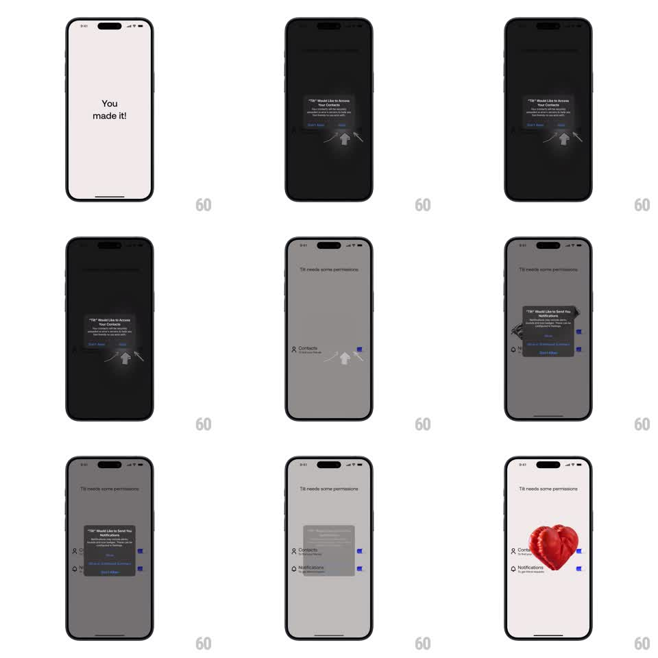

Media
Frame-by-frame

Rebuild this interaction 1:1: Tilt's permissions onboarding - permission rows appear in sequence with responsive toggle switches, and granting them all triggers a playful 3D floating-heart reward.

Rebuild this interaction 1:1: Tilt's permissions onboarding - permission rows appear in sequence with responsive toggle switches, and granting them all triggers a playful 3D floating-heart reward. ## Integration Integration: stack-agnostic spec - springs given as stiffness/damping, timed motions as duration + curve; map every value to your framework and animation library of choice. ## Scene A clean permissions sheet: a short explainer line, then a stack of permission rows (Notifications, Contacts, Location...), each with an icon, label, and toggle switch. Granting the final permission conjures a glossy 3D heart that floats up with particle accents, then the Continue button activates. ## Motion spec Pattern: sequential row reveal + toggle physics + 3D heart reward. - Rows enter one at a time (slide up 16px + fade, 220ms each, 90ms stagger) - the list builds sequentially, not all at once. - Toggling: the knob slides with an overshoot spring (stiffness ~500, damping ~24), the track fills with accent color chasing the knob (180ms), and the row's icon does a small happy hop (translateY -4px and back, spring ~400/20). - If a system dialog is involved, the toggle animates only after the system grant returns - pending state is a subtle track shimmer. - All granted: a 3D heart scales in from below center (spring ~300/20 with rotation settling from -15deg), floats upward ~60px (ease-out, 600ms) while tiny sparkle particles burst around it (8-12 particles, 500ms life), then settles into a gentle bob (translateY +-5px, 2.2s loop). - The Continue button fills and springs up (scale 0.95 to 1, spring ~380/22) as the heart settles. ## Calibration - Row stagger is quick enough to read as one gesture - total build under ~700ms. - The heart is glossy 3D with moving highlight; a flat heart icon would deflate the reward. ## Reduced motion Rows fade in together; heart appears static; no particles. ## Don't miss - Toggles are real state - re-tapping reverses the animation symmetrically, and the reward retracts if a permission is revoked. - The heart floats above the rows without covering the toggles; layout shifts down slightly to make room.